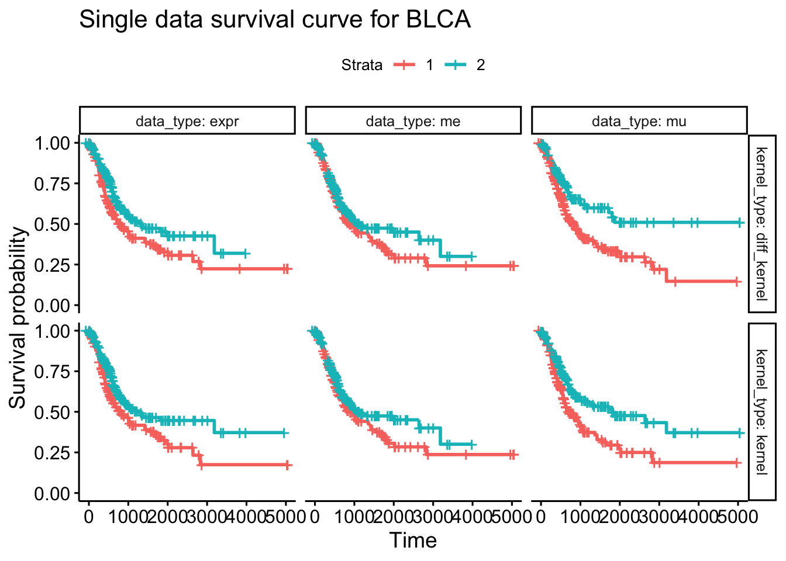
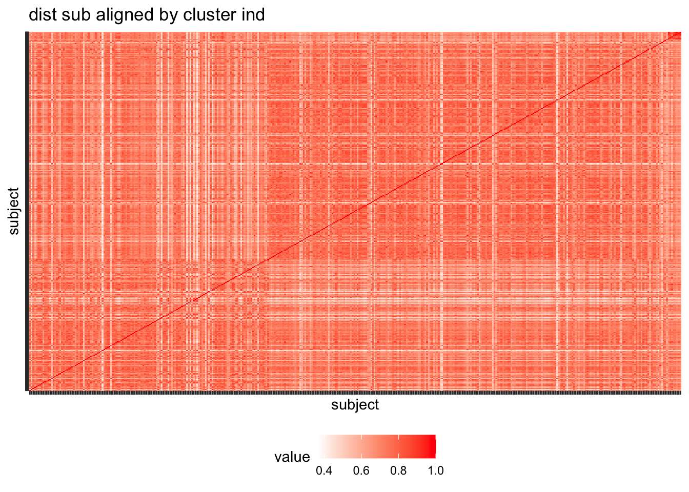

TCGA_pancancer_survival
yuqimiao
2022-11-05
Last updated: 2022-11-07
Checks: 6 1
Knit directory: DEP_SIMLR/
This reproducible R Markdown analysis was created with workflowr (version 1.6.2). The Checks tab describes the reproducibility checks that were applied when the results were created. The Past versions tab lists the development history.
The R Markdown is untracked by Git. To know which version of the R Markdown file created these results, you’ll want to first commit it to the Git repo. If you’re still working on the analysis, you can ignore this warning. When you’re finished, you can run wflow_publish to commit the R Markdown file and build the HTML.
Great job! The global environment was empty. Objects defined in the global environment can affect the analysis in your R Markdown file in unknown ways. For reproduciblity it’s best to always run the code in an empty environment.
The command set.seed(20221003) was run prior to running the code in the R Markdown file. Setting a seed ensures that any results that rely on randomness, e.g. subsampling or permutations, are reproducible.
Great job! Recording the operating system, R version, and package versions is critical for reproducibility.
Nice! There were no cached chunks for this analysis, so you can be confident that you successfully produced the results during this run.
Great job! Using relative paths to the files within your workflowr project makes it easier to run your code on other machines.
Great! You are using Git for version control. Tracking code development and connecting the code version to the results is critical for reproducibility.
The results in this page were generated with repository version 72c8d09. See the Past versions tab to see a history of the changes made to the R Markdown and HTML files.
Note that you need to be careful to ensure that all relevant files for the analysis have been committed to Git prior to generating the results (you can use wflow_publish or wflow_git_commit). workflowr only checks the R Markdown file, but you know if there are other scripts or data files that it depends on. Below is the status of the Git repository when the results were generated:
Ignored files:
Ignored: .DS_Store
Ignored: .Rhistory
Ignored: .Rproj.user/
Ignored: analysis/docs/.DS_Store
Ignored: analysis/docs/figure/.DS_Store
Ignored: code/.DS_Store
Ignored: code/Code_collection/.DS_Store
Ignored: code/Code_collection/TCGA_survival_analysis/.DS_Store
Untracked files:
Untracked: CheckBMIQ-1.pdf
Untracked: Type1fit-1.pdf
Untracked: Type2fit-1.pdf
Untracked: analysis/TCGA_pancancer_survival.rmd
Untracked: analysis/simulation_log.rmd
Untracked: code/Code_collection/DEP-SIMLR_code_log.md
Untracked: code/Code_collection/TCGA_survival_analysis/Package_install.R
Untracked: code/Code_collection/TCGA_survival_analysis/SVA_combat.R
Untracked: code/Code_collection/TCGA_survival_analysis/methyl_BMIQ_normalization.R
Untracked: code/Code_collection/TCGA_survival_pan_cancer_pipeline/
Untracked: code/functions/feature_score.R
Untracked: code/simulation_scripts/simu_221012_3.R
Untracked: code/simulation_scripts/simu_221017_1.R
Untracked: code/simulation_scripts/simu_221017_2.R
Untracked: code/simulation_scripts/simu_221017_3.R
Untracked: data/mutation_dim.rds
Unstaged changes:
Modified: analysis/simulation_notebook.rmd
Modified: code/functions/visualization_functions.R
Modified: code/simulation_scripts/simu_221012_analysis.R
Staged changes:
Modified: analysis/simulation_notebook.rmd
Note that any generated files, e.g. HTML, png, CSS, etc., are not included in this status report because it is ok for generated content to have uncommitted changes.
There are no past versions. Publish this analysis with wflow_publish() to start tracking its development.
Introduction
This script summarize the results from the TCGA pancancer analysis and pick the cancers with good performance for visualization
Pancancer analysis results and store files log
survival checking tibble
surv_tib_check# A tibble: 55 × 8
cancer kernel_type data_type c method surv_pv sample_size min_clust_size
<chr> <chr> <chr> <dbl> <chr> <dbl> <dbl> <dbl>
1 BLCA diff_kernel Integration 6 SNF 0.00102 391 51
2 BLCA diff_kernel Integration 5 SNF 0.00136 391 61
3 BLCA kernel Integration 5 SNF 0.00213 391 58
4 BLCA kernel Integration 6 SNF 0.00265 391 50
5 BLCA kernel Integration 4 SNF 0.00556 391 69
6 BLCA diff_kernel Integration 4 SNF 0.00790 391 70
7 BLCA kernel Integration 3 cimlr 0.0109 391 50
8 BLCA kernel Integration 6 cimlr 0.0133 391 24
9 BLCA kernel Integration 7 SNF 0.0154 391 46
10 BLCA kernel Integration 4 cimlr 0.0158 391 51
# … with 45 more rowsCriteria for cancer picking: 1. diff_part_cimlr has better performance 2. smallest cancer have at least 20 subjects ? not right for KIRP 3. integration can find more subtypes
Picking KIRP, KIRC and IUAD
Visualization
Feature selection for visualization
Using Laplacianc score and robust rank aggregation for feature picking; Specifically, we choose the features consistent with the similarity matrix learned from diff-part-cimlr
Visualization for KIRP
Detailed functions is in ‘survival_res_analysis.R’
g_kirp = readRDS("/Volumes/sw2206/yuqi/data_20220308/pancancer_output/alpha_0.8_eigengap/picking_3_cancer/kirp_plots.rds")survival tib
kirp_check# A tibble: 12 × 8
cancer kernel_type data_type c method surv_pv sample_size min_clust_size
<chr> <chr> <chr> <dbl> <chr> <dbl> <dbl> <dbl>
1 KIRP kernel expr 2 spectral 5.21e- 2 148 59
2 KIRP kernel me 3 spectral 1.24e- 9 148 34
3 KIRP kernel mu 2 spectral 5.99e- 1 148 74
4 KIRP kernel Integration 4 SNF 1.58e- 1 148 19
5 KIRP kernel Integration 4 cimlr 1.40e- 1 148 23
6 KIRP kernel Integration 4 part_cimlr 1.31e-14 148 9
7 KIRP diff_kernel expr 2 spectral 2.63e- 2 148 55
8 KIRP diff_kernel me 3 spectral 4.85e-11 148 34
9 KIRP diff_kernel mu 2 spectral 5.99e- 1 148 74
10 KIRP diff_kernel Integration 4 SNF 1.10e- 3 148 26
11 KIRP diff_kernel Integration 4 cimlr 2.41e- 1 148 9
12 KIRP diff_kernel Integration 4 part_cimlr 3.38e-14 148 9surv_plot
g_kirp$g_sing_surv
g_kirp$g_integ_surv
heatmap for gene expr
g_kirp$g_expr
heatmap for methylation
g_kirp$g_me
Visualization for KIRC
g_kirc = readRDS("/Volumes/sw2206/yuqi/data_20220308/pancancer_output/alpha_0.8_eigengap/picking_3_cancer/kirc_plots.rds")survival tib
kirc_check# A tibble: 12 × 8
cancer kernel_type data_type c method surv_pv sample_size min_clust_size
<chr> <chr> <chr> <dbl> <chr> <dbl> <dbl> <dbl>
1 KIRC kernel expr 2 spectral 9.38e-6 250 116
2 KIRC kernel me 2 spectral 3.88e-4 250 88
3 KIRC kernel mu 4 spectral 5.69e-1 250 42
4 KIRC kernel Integration 3 SNF 9.58e-1 250 29
5 KIRC kernel Integration 3 cimlr 6.57e-1 250 25
6 KIRC kernel Integration 3 part_cimlr 3.47e-1 250 43
7 KIRC diff_kernel expr 2 spectral 4.04e-5 250 120
8 KIRC diff_kernel me 2 spectral 4.29e-4 250 86
9 KIRC diff_kernel mu 4 spectral 6.81e-1 250 41
10 KIRC diff_kernel Integration 3 SNF 1.14e-1 250 43
11 KIRC diff_kernel Integration 3 cimlr 6.57e-1 250 25
12 KIRC diff_kernel Integration 3 part_cimlr 3.16e-2 250 69surv_plot
g_kirc$g_sing_surv
g_kirc$g_integ_surv
heatmap for gene expr
g_kirc$g_expr
heatmap for methylation
g_kirc$g_me
Visualization for LUAD
g_luad = readRDS("/Volumes/sw2206/yuqi/data_20220308/pancancer_output/alpha_0.8_eigengap/picking_3_cancer/luad_plots.rds")survival tib
luad_check# A tibble: 12 × 8
cancer kernel_type data_type c method surv_pv sample_size min_clust_size
<chr> <chr> <chr> <dbl> <chr> <dbl> <dbl> <dbl>
1 LUAD kernel expr 3 spectral 0.00127 427 101
2 LUAD kernel me 2 spectral 0.276 427 196
3 LUAD kernel mu 3 spectral 0.581 427 52
4 LUAD kernel Integration 4 SNF 0.257 427 55
5 LUAD kernel Integration 4 cimlr 0.0879 427 23
6 LUAD kernel Integration 4 part_cimlr 0.00661 427 23
7 LUAD diff_kernel expr 3 spectral 0.00222 427 101
8 LUAD diff_kernel me 2 spectral 0.498 427 195
9 LUAD diff_kernel mu 2 spectral 0.0437 427 28
10 LUAD diff_kernel Integration 4 SNF 0.212 427 71
11 LUAD diff_kernel Integration 4 cimlr 0.0779 427 23
12 LUAD diff_kernel Integration 4 part_cimlr 0.00588 427 22surv_plot
g_luad$g_sing_surv
g_luad$g_integ_surv
heatmap for gene expr
g_luad$g_expr
heatmap for methylation
g_luad$g_me
Potential problems in analysis
- The number of mutation gene per cancer is small.
# saveRDS(mutation_dim, file = "./data/mutation_dim.rds")
mutation_dim = readRDS("./data/mutation_dim.rds")
knitr::kable(mutation_dim)| cancer | n_mut |
|---|---|
| BLCA | 60 |
| BRCA | 57 |
| CESC | 15 |
| COAD | 188 |
| GBM_ | 21 |
| HNSC | 36 |
| KIRC | 12 |
| KIRP | 11 |
| LGG_ | 50 |
| LIHC | 14 |
| LUAD | 52 |
| LUSC | 15 |
| PAAD | 81 |
| PCPG | 5 |
| PRAD | 11 |
| SARC | 15 |
| STAD | 65 |
| TGCT | 16 |
| THCA | 5 |
| UCEC | 117 |
the gene expression data is not normalized; Very large counts in the data, presumably preprocess steps need to be done ;
Using RRA to rank the features for visualization will give an imbalanced feature ranking, there the clusters sparate further away will dominant those top features;
Use other source of data
https://github.com/mariodeng/FirebrowseR
microRNA available tractable preprocess
sessionInfo()R version 3.6.2 (2019-12-12)
Platform: x86_64-apple-darwin15.6.0 (64-bit)
Running under: macOS 10.16
Matrix products: default
BLAS: /Library/Frameworks/R.framework/Versions/3.6/Resources/lib/libRblas.0.dylib
LAPACK: /Library/Frameworks/R.framework/Versions/3.6/Resources/lib/libRlapack.dylib
locale:
[1] en_US.UTF-8/en_US.UTF-8/en_US.UTF-8/C/en_US.UTF-8/en_US.UTF-8
attached base packages:
[1] stats graphics grDevices utils datasets methods base
other attached packages:
[1] survminer_0.4.9 ggpubr_0.4.0 MASS_7.3-51.5 flexsurv_1.1.1
[5] survival_3.1-11 forcats_0.5.0 stringr_1.4.0 dplyr_1.0.7
[9] purrr_0.3.4 readr_1.3.1 tidyr_1.1.3 tibble_3.1.3
[13] ggplot2_3.3.5 tidyverse_1.3.0
loaded via a namespace (and not attached):
[1] fs_1.5.0 lubridate_1.7.8 RColorBrewer_1.1-2 httr_1.4.2
[5] rprojroot_2.0.2 tools_3.6.2 backports_1.2.1 utf8_1.2.2
[9] R6_2.5.0 DBI_1.1.0 colorspace_2.0-2 withr_2.4.2
[13] gridExtra_2.3 tidyselect_1.1.1 curl_4.3 compiler_3.6.2
[17] git2r_0.26.1 cli_3.0.1 rvest_0.3.5 xml2_1.3.2
[21] labeling_0.4.2 scales_1.1.1 survMisc_0.5.5 mvtnorm_1.1-2
[25] quadprog_1.5-8 digest_0.6.27 foreign_0.8-76 rmarkdown_2.1
[29] rio_0.5.16 pkgconfig_2.0.3 htmltools_0.5.1.1 highr_0.8
[33] dbplyr_1.4.2 rlang_0.4.11 readxl_1.3.1 rstudioapi_0.13
[37] farver_2.1.0 generics_0.1.0 zoo_1.8-9 jsonlite_1.7.2
[41] zip_2.0.4 car_3.0-7 magrittr_2.0.1 Matrix_1.2-18
[45] Rcpp_1.0.8.3 munsell_0.5.0 fansi_0.5.0 abind_1.4-5
[49] lifecycle_1.0.0 stringi_1.5.3 yaml_2.2.1 mstate_0.2.12
[53] carData_3.0-3 grid_3.6.2 promises_1.2.0.1 crayon_1.4.1
[57] lattice_0.20-41 cowplot_1.0.0 haven_2.3.1 splines_3.6.2
[61] hms_1.1.0 knitr_1.32 pillar_1.6.2 ggsignif_0.6.0
[65] reprex_0.3.0 glue_1.4.2 evaluate_0.14 data.table_1.13.6
[69] modelr_0.1.6 deSolve_1.28 vctrs_0.3.8 httpuv_1.5.5
[73] cellranger_1.1.0 gtable_0.3.0 muhaz_1.2.6.1 km.ci_0.5-2
[77] assertthat_0.2.1 xfun_0.22 openxlsx_4.1.4 xtable_1.8-4
[81] broom_0.7.6 rstatix_0.7.0 later_1.1.0.1 KMsurv_0.1-5
[85] workflowr_1.6.2 ellipsis_0.3.2